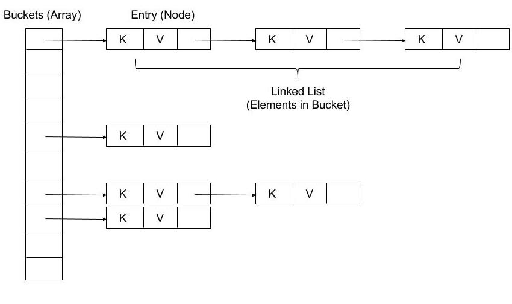

基础
我们先大概瞥一眼 JDK 1.7 之前的 HashMap 结构：

简而言之，HashMap 是由数组组成的一定数量的桶（bucket）。在进行存储时，使用 key 的 hashcode 通过 hash 函数计算得到 hash 值，然后通过 **hash 值 % 数组长度**来确定将 Entry(key + value) 放入数组的哪个桶里。
为什么要用
hashcode来确定位置？为了高效的定位元素在数组中的位置，以及使放入的元素尽可能均匀的分布在数组中。
正确实现 hashcode 方法返回的 hash 值可以达到散列分布的目的，同样的键也会返回相同的 hash 值，因此我们使用 hash 信息来确定元素在数组中的下标信息以达到快速访问。
如果 hash 函数足够完美，将能实现数据的均匀分配，此时时间复杂度未 O(1)。但是开发者通常会编写较差的哈希函数，这将导致分布不均。
散列函数也被用于不可逆加密中，比如：MD 加密、SHA 加密

Hash 碰撞及解决（Collision）
此时数组将会有很大一部分被浪费，而且含多不同的键将会产生相同的 hash 值**（hash 碰撞）**。

负载因子与容量
为了解决这个问题，一方面，我们可以增大哈希值的取值空间来减少冲突的可能性，比如使 hash 表大于所需的总数据量。期望只要有哈希表的 70 % 被占用就足够。存储元素的个数和哈希表的长度的比值就叫做负载因子（Load factor）。
\begin{align*} Load \quad Factor = \frac{Total \quad number \quad of \quad items \quad stored} {Size \quad of \quad the \quad Buckets \quad array} \end{align*}
负载系数限制通常是可配置的，并在时间和空间成本之间进行权衡。
Java 中 HashMap 的默认负载因子是 0.75。
容量（Capacity） 在 Java HashMap 中指桶的数量。
Java HashMap 的默认初始容量为 16，即存储区数组在首次插入时被延迟初始化。
当插入的元素到达一定的阈值，HashMap 将会扩容来重新计算哈希，该阈值的计算公式为：
以 HashMap 的默认值计算，则为：
也就是说当插入第 13 个元素后会进行扩容为之前的两倍 oldThreshold << 1，此时将发生重新哈希（Rehashing），由于重新哈希处理增加了存储桶的数量，因此降低了负载系数。
为什么 HashMap 加载因子默认是 0.75？
这个跟一个统计学里很重要的原理——泊松分布有关。
泊松分布是统计学和概率学常见的离散概率分布，适用于描述单位时间内随机事件发生的次数的概率分布。
等号的左边，P 表示概率，N 表示某种函数关系，t 表示时间，n 表示数量。等号的右边，λ 表示事件的频率。在理想情况下，使用随机哈希码，在扩容阈值（加载因子）为 0.75 的情况下，节点出现在频率在 Hash 桶（表）中遵循参数平均为 0.5 的泊松分布。忽略方差，即 X = λt，P(λt = k)，其中 λt = 0.5的情况。
所以我们可以知道，其实常数 0.5 是作为参数代入泊松分布来计算的，而加载因子 0.75 是作为一个条件，当 HashMap 长度为length/size ≥ 0.75 时就扩容，在这个条件下，冲突后的拉链长度和概率结果为：
2
3
4
5
6
7
8
9
1: 0.30326533
2: 0.07581633
3: 0.01263606
4: 0.00157952
5: 0.00015795
6: 0.00001316
7: 0.00000094
8: 0.00000006计算结果如上述的列表所示，当一个桶中的链表长度达到 8 个元素的时候，概率为 0.00000006，几乎是一个不可能事件。
选择0.75作为默认的加载因子，完全是时间和空间成本上寻求的一种折衷选择。
寻址
另一方面，为了给冲突元素一个合适的位置存储，我们将解决方案从寻址方向上分为两个大类：
| 开放式寻址（Open Addressing） | 闭合式寻址（Closed Addressing） |
|---|---|
| 通过在哈希表数组本身中搜索另一个空存储桶来处理冲突。 | 键始终存储在散列到的桶中。在每个桶的基础上使用单独的数据结构来处理冲突。 |
| 每个桶中最多存放一个键。 | 每个桶存储任意键数。 |
| 理论最大负载系数为1。 | 没有理论上的最大负载系数。 |
| 哈希表数组的大小必须始终至少与哈希表中键的数量一样大。 | 性能随着负载系数的增长而降低。 |
开放式寻址相关技术
- 线性探测（
Linear Probing） - 二次方探测（
Quadratic Probing） - 再哈希（
Double hashing） - 罗宾汉哈希（
Robin Hood hashing） - 等
插入和查找扫描阵列的顺序在实现之间有所不同。下面介绍一些常用技术。 （所有索引均以数组长度为模。）
线性探测
如果在存储区 i 中发生冲突，搜索序列将使用下列索引继续：
- i + 1
- i + 2
- i + 3
- …
由于探测序列在内存中是线性的，因此该方法可实现良好的缓存性能。
二次方探测
通过二次方探测，从存储桶 i 开始的搜索序列如下：
- i + 12
- i + 22
- i + 32
- …
再哈希
使用二次哈希（另一个哈希函数）双重哈希，h 用于确定搜索序列中步骤的大小。如果 h2(key) = j，则从存储区 i 开始的搜索序列如下：
- i + 1 × j
- i + 2 × j
- i + 3 × j
（如果 j 恰好等于数组长度的倍数，则使用 1 代替。）
闭合式寻址相关技术
- 使用链表单独存储 hash 相同的键值（拉链法）
- 使用动态数组单独存储 hash 相同的键值
- 使用自平衡二叉树
Java HashMap 是结合第一种和第三种的实现。
HashMap
先总体了解下 HashMap 作为集合类的特性：
-
HashMap 的键值都不能存储基本类型
要存储基本类型提高性能，可以使用
Eclipse Collection的原始类型集合类 -
支持一个 null 键和多个 null value
-
键必须唯一，重复的键值将被后面的值替代
-
使用哈希技术存储索引，所以不保证插入顺序
-
非线程安全，需自己保证同步
可以使用
Collections.synchronizedMap(new HashMap(...));包裹，或使用HashTable，ConcurrentHashMap，后者性能更高 -
快速失败机制
在 Java 非线程安全的集合类中，遍历集合中，对集合做额外的操作比如调用新增、删除会立即停止当前操作并抛出
ConcurrentModificationException，在 HashMap 中使用modCount记录修改次数，如果遍历中该记录和开始时不相同，则报错。可以使用
Iterator接口安全的移除元素，一般集合会实现安全的移除操作。但是多线程环境下得保证Iterator实现类的线程安全。1
2
3
4
5
6
7
8
9final HashMap<String, String> hashMap = new HashMap<>(20, 0.75f);
final Iterator<Map.Entry<String, String>> iterator = hashMap.entrySet().iterator();
while (iterator.hasNext()) {
if (iterator.next().getKey().equals("test")) {
iterator.remove(); // ok!
}
}
// java 8 removeIf
hashMap.entrySet().removeIf(stringStringEntry -> stringStringEntry.getKey().equals("test")); -
标记了 Serializeable 和 Cloneable 接口
桶数组 or 桶表
在代码中，桶数组用如下变量表示：
1 | transient Node<K,V>[] table; |
这里需要注意几点：
-
桶数组并没有在构造方法中初始化，而是在第一次使用时才会分配内存，比如
put、compute、merge等。 -
当分配内存时，长度总是 2 的幂次方。
为什么选择 2 的幂次方？
由于为了达到高效处理性能，很多操作都是通过位运算完成。比如其中的
hash方法，计算桶索引等，后面会详细说明。 -
如果初始化时传入的 capacity 不是 2 的幂次方，将会使用该位运算算法增加到最近的 2 次幂。
单链表
每个桶内部由链表组成，在代码中为类 Node<K, V> 的实例，此类是 HashMap 类的静态内部类，并且实现 Map.Entry<K, V> 接口，此节点的表示形式为：
1 | static class Node<K,V> implements Map.Entry<K,V> { |
HashMap 如何计算桶索引？
之前我们提到计算索引是使用 hash 值和桶数组长度求余，但是求余的效率并没有直接按位运算的高。同样我们需要借助一些位运算的技巧，这里 n 为桶数组的长度：
1 | index = hash(key) & (n-1) // 相当于求 hash(key) % n，当 n 位 2 的次幂且不为 0 时成立 |
注意，为什么这里需要将高位数据移位到低位进行异或运算呢？这是因为有些数据计算出的哈希值差异主要在高位，而 HashMap 里的哈希寻址是忽略容量以上的高位的，那么这种处理就可以有效避免类似情况下的哈希碰撞。
计算桶索引并不只是发生在 put 方法时，在调用 get、contains、remove 时都会调用 hash 方法重新计算 hash 值并在计算桶索引。
为什么桶内不使用 ArrayList 或 LinkedList？
HashMap 内部使用单向链表来维护哈希冲突的元素，但为什么不用数组或双向链表，这其实是一个平衡后的考虑：
ArrayList使用较少的空间，检索速度快，但是最坏的情况下插入和删除元素的时间复杂度可能为O(n)LinkedList使用更多空间维护前后节点信息，但是插入或删除元素的时间复杂度为O(1)
使用单向链表的好处在于，其既可以使空间相对较少，也能保证删除和插入的时间复杂度为 O(1)。但是如果链表过长，最坏的可能是所有元素都放入一个桶里，此时时间复杂度将变为 O(n)。为了优化这一点，JDK 1.8 使用了红黑树来优化链表过长的情况。
当桶数组的长度超过 MIN_TREEIFY_CAPACITY 且桶中的元素超过 TREEIFY_THRESHOLD 值时，链表转为红黑树。
当桶中元素减少至 UNTREEIFY_THRESHOLD 时，红黑树退回到链表。
为什么用红黑树？
因为当大量哈希冲突的时候会导致节点链表越来越长从而降低 HashMap 性能。而红黑树为二叉查找树，所以时间复杂度为 O(logn)，因此在数据量大的散列表中红黑树更有优势。
**本质上这是个安全问题。**因为在元素放置过程中，如果一个对象哈希冲突，都被放置到同一个桶里，则会形成一个链表，我们知道链表查询是线性的，会严重影响存取的性能。而在现实世界，构造哈希冲突的数据并不是非常复杂的事情，恶意代码就可以利用这些数据大量与服务器端交互，导致服务器端 CPU 大量占用，这就构成了哈希碰撞拒绝服务攻击，国内一线互联网公司就发生过类似攻击事件。
为什么选择红黑树而不是二叉树或绝对平衡二叉树呢？
首先，二叉树在极端情况下依然会形成链表。例如 1,2,3,4 的 hashCode 相同时，二叉树退化成链表
再是，绝对平衡就好像有强迫症一样把精力消耗在如何达到平衡上，因此造成不必要的性能开销
而红黑树它是一棵平衡树但不是绝对平衡树，优点有以下：
- 树属于折半查找，于较长的链表相比查询效率要高
- 平衡树解决了二叉树的计算情况问题（二叉树退化成链表）
- 非绝对平衡树比绝对平衡树在增删节点时要高效一些
因此红黑树是综合性能较强的数型数据结构。
参考资料
- hash-tables-open-vs-closed-addressing 开放寻址和闭合寻址比较
- hash-tables-open-addressing 介绍开放式寻址
- hash-tables hash table 实现